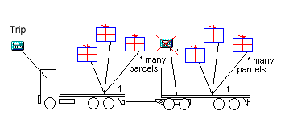
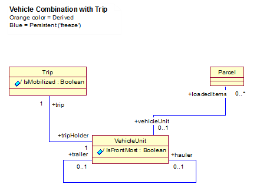
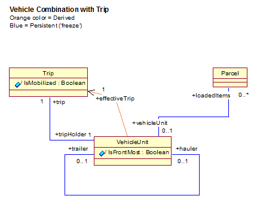
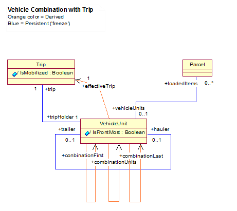
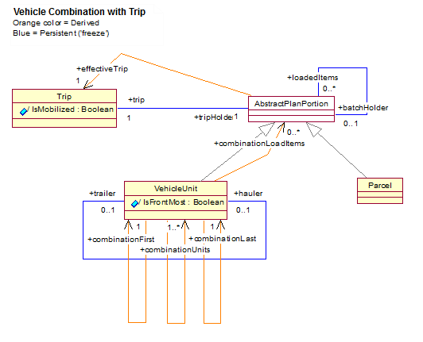

Dynamic Navigation for Higher Performance
Improving performance in Delphi Bold MDA applications by replacing navigation code with derived links in the model
This post on Model Driven Architecture in Delphi and Bold, by Rolf Lampa, has been previously published on howtodothings.com.
Modeling class structures takes some thinking, and when done the thinking and the drawing and after that starting up using the model, then you'll spend awful lots of code traversing links in order to retrieve trivial info in a given object structure. Navigating the same sometimes complicated link-paths over and over again consumes CPU power and it also causes much redundant code or expressions accessing the same navigation paths over and over again. In the Bold For Delphi Architecture you would also place redundant subscriptions from many different locations to the same target, subscribing to the same paths over an over again.
But with Bold you can often directly address unnecessary link navigation, the redundant navigational code/OCL-expressions and at the same time achieve decreasing CPU load by adding derived associations instead, making a few "dumb" persistent links more useful and the model more "intelligent". And furthermore, in doing so directly in your model your model will at the same time reflect more specifically which parts of the model is actually used, and how.
An example can show a typical situation where adding many derived links, extending the model with more useful info, will result in more efficient, less redundant and more readable code. If we were talking traditional handcrafting you probably would have thought I was joking, because we usually don't save us from more problems by adding more relations between objects...! But I'm not joking, instead you will actually achieve all the mentioned benefits by adding a few simple lines (associations) to the model when using Bold.
Example
A truck vehicle combination can serve us with an example. The example
model will consist of Vehicle units (connected into 'vehicle
combinations', and some Parcels and a Trip object keeping all kinds
of trip info and calculations. With these three basic categories
connected together we will end up writing almost 50% of the code (or
ocl-expressions) for algorithms navigating the basic structure which has
only three persistent links. But such coding is trivial, takes time and
adds no added value to the system.
Let's have a look at a "RIL world representation" of an example before representing it using an UML class diagram ("RIL" is my initials):
Fig 1: The Vehicle combination below carries Parcels, but only the
front-most VehicleUnit keeps track of Trip info about distances,
events and economic calculations.

Disregard the artistic aspects of the illustration.
For several reasons, not discussed here, the VehicleUnits shown above
always has a Trip object attached, but only the front-most trip object
is representing the entire vehicle combination. The other trip
objects/calculators are "demobilized" until the trailer (possibly)
is disconnected from the truck, and then the trailer will be a valid
("front-most") tripHolder on its own (and thus its Trip object will
be mobilized).
Imagine that you are viewing one of the Vehicle units or one of the
Parcels using a UI. Then you would probably like to know more about
trip related info, like distances traveled, addresses visited, the
visiting order, costs or revenues per km etc (all managed by the trip
object).
Despite the fact that there's only three relations in this model (see
Fig 2. below) you would still have to think twice in order to navigate
correctly trying to find the "calculator" in the front (here
represented by a "Trip class").
It would be even worse if you wanted to implement some generic logic or
calculations for the VehicleUnits, because you would always have to
make sure that you navigate to the "front-most vehicle unit" (lets
call it the "hauler") and from the front-most vehicle unit navigate
directly to the trip info (the "calculator").
In a real application there was so much info embedded in this basic structure that the three links would be accessed/navigated so many times that many hundreds of lines of code (and/or OCL expressions) would be written "here and there and everywhere". One of the bad things with that is that if you explicitly traverse every link from one end of the structure every time you need access to an object or an attribute in the other end of the structure, you will need to execute the navigation logic in the CPU every time.
Another bad thing is that your core business logic would "drown" in
the code and expressions dealing with such trivial navigation (lots of
if then else, for i := and assign checks). And this is where derived
links can help a lot in avoiding a logical mess (derived attributes
would too, of course).
Fig 2: A simple class model of the illustration above could look something like this:

The navigation problem is more obvious in this class model than in the "RIL world illustration".
If I for example select a Parcel in a GUI list and want some trip info
(from the trip object), then as a programmer I couldn't directly tell
the exact navigation path to the "mobilized" trip object, which is the
object holding current valid trip info. Example:
If the parcel was loaded on a trailer, then the expression (from
Parcel) 'vehicleUnit.trip' would return a demobilized trip object! But
if the Parcel was loaded on the hauler it would return the desired
"mobilized" trip object. This complication of things is in itself
reason enough to add a derived link fixing the problem of accessing the
correct trip object directly in the model, so that one as a programmer
never again would have to consider this when coding algorithms that
needs navigating the structure. I would definitely add a link named
effectiveTrip, like so:
Fig 3: A link called "effectiveTrip" was added to the model. (I
tend to let blue color represent "persistent" (="freeze") and orange
color represent "derived" for links).

This new derived link 'effectiveTrip will implement (and thus
"hide") all the navigation logic needed to reach the front-most trip
object. As I can already now foresee that this link will be accessed
very often from Parcels and in vehicle combinations I would hard code
the derivation logic optimizing the logic for finding the "front-most"
vehicle unit, which involves traversing the trailer/hauler link and
stop when the hauler link is nil (=IsFrontMost), and From there we
can reference the correct trip object directly. This means that we also
realize that accessing the front-most vehicle (the combination hauler)
is very typical and will happen even more often than accessing the trip
object itself! I already know that also the effectiveTrip link can use
such a derived link! So lets add it right away giving it the name
'combinationFirst' (see Fig 4. below).
I selected the name 'combinationFirst' because then you immediately
realize the typical in this situation. It's a typical list handling
problem (first, last, etc). Thus you can already now imagine the
usefulness of yet a another derived link which we can call
'combinationLast' and even a third link called
'combinationUnits'!
From a real world example I can assure that these links will be frequently used and thus the "cost" for evaluating them will be paid off already the second time you access any one of them!
Fig 4: But, doesn't also derived links require CPU in order to be evaluated, you might ask? The answer is, yes of course, but only once, if the subscribed items (hauler/trailer connection) don't change. And this is not very likely, at least not very often, but this very "hot spot" structure will be used in the logic of many remote places very often accessing objects cross over, and when doing so the links already directly references the instances you would want to access. Look at the "mess" of links below...!:

Now this is an example of a high performance solution using the model as the tool for optimization. And in doing so the additional links are at the same time clarifying/indicating directly in the model the intended usage of this specific structure.
For those of you who think that I finally got mad I can tell that I
didn't. Instead I increased the speed of the calculations and all the
activities related to this structure in a real world application with
many thousand percents compared to explicitly coding each step of the
entire navigation path each time the combination trip or a specific
VehicleUnit (or attribute in any of them) was accessed!
All kinds of data are stored in this structure and more than 30 derived attributes for different calculation purposes accesses the structure back and forth all the time, providing the client user with real-time calculations of revenues per km and distances, based on distance shares of totals, based on shares of other shares, based on... etc, etc.
The thing is to, step for step, let one derived link use the other links as often as possible, then even the need for reevaluating the links decreases when things changes!
The last statement can be verified very clearly with a separate example showing how important it is to "REUSE" everything you derive (step for step) to every higher level (regarding which part of the structure is more likely to change and which part is more "static"). With "reuse" I mean "the CPU work already done" for deriving the links (which then is cached). More on this could be subject for a separate article.
Now lets have a look at some code. Assuming we need to get hold of the
trip object, starting from a Parcel, but we don't know on which
VehicleUnit we are loaded, and therefore we start looking for the trip
using the link effectiveTrip which "hides" the logic determining
which Trip object is "mobilized" (i.e "effective" front-most):
function TParcel.CalculateTrip_Something...: Double;
var
TripObj : TTrip;
begin
TripObj := Self.vehicleUnit.effectiveTrip; // that's it! ...
From the Parcel, down to the vehicle platform, and then directly access the trip. That's easy, and the code is clear. The details about how we got hold of the correct trip object (hidden in the derived link) does not, and should not, be mixing up the business logic when traversing and performing calculations based on this object structure.
In our real world application both VehicleUnits and Parcels have a
common super class (not shown so far). This is because a vehicle can be
loaded on another vehicle, just like any other parcel can be loaded on
a vehicle (or in a batch of Parcels), so the code above is even simpler
in my final generic model where the derived link is "virtual
overridden" in different subclasses. My final code goes like this:
begin
TripObj := Self.effectiveTrip; // that's it!
The Parcel will find its valid (front-most) Trip using this command
regardless of how complicated the path might be. This change in the
model is shown in fig 5 where a new common super class (for parcels and
vehicles) actually owns the persistent and derived link to the trip
class, and the (abstract) effectiveTrip-link is implemented
(overridden) in the TParcel (knowing to find its way via the vehicles)
and then overridden separately for the VehicleUnit class as shown
below.
Fig 5: Here the model is modified to become more generic even allowing any "planable object" to carry a batch of other planable objects, and as the model goes more generic, the role names do so too.

Trip info applies directly for a Parcel too (via
AbstractPlanPortion) because a transport company can plan a parcel to
be delivered with, for instance, an airplane which totals we are not
interested of - but we are still interested in keeping track of any trip
events involved in the actual transportation along with documentation
and transactions attached to the parcel itself etc. But this also means
that when there's need for accessing the "effective" trip object we
also need to perform very complicated checks all over the structure
trying to find out in which context the (correct, "mobilized") trip
object can be found... Without our derived links hiding (implementing)
all the navigational seeking and trying, this would really make our
calculation logic very complicated only for such a simple thing as just
retrieving some data from the structure. A real nightmare in fact...
This kind of complicating of what should be a simple thing is not very unique in the programming world. What is unique here though is how it can be dealt with using Bold technology with its derived links and subscription mechanisms (and the fact that links are quick and easy to draw, and they're code generated, and they're automagically instantiated by the Bold framework when accessed by your code).
Notice again that the Parcel can be a TripHolder itself (Parcel can
even hold batches of other parcels), or if the Parcel is loaded on a
carrier it doesn't know if it's loaded on the carrier which actually
holds the trip info (that is, whether on the hauler or the trailer). We
would really have to do some tricky navigation in this structure! With a
structure like this you can imagine how much redundant coding and how
complicated OCL expressions would be just for accessing information in
the structure. Your core business logic would actually ""drown"" in
navigation logic just for simply retrieving trivial things from the
structure, and the CPU would spend a lot of time finding Your way(s) to
the target objects/data.
Starting from three (3) persistent links (blue) holding the structure together, we ended up in another five (5) very useful derived links reducing all the complexity! And the result is that the final application runs much faster and that the business logic is less cluttered with trivial navigation code endlessly traversing object structures.
Before listing the most efficient code for the optimized hard coded derivations of the links (text based Ocl expressions could also have been used), I would like to conclude that with these links you can, from anywhere in the structure, go anywhere, directly, by referencing link members with names fully clarifying what you intend to access. And all this will be done in the most efficient way you can come up with using the Bold architecture.
With "efficient" I mean "always direct access to the desired target object instance" (except for the first evaluation which in this particular case happens only once for hundreds of accesses...).
This is only part of the concepts we used consciously to make possible what was not possible before: using regular, but "clean design", modeled and structured object oriented business classes performing high performance real time (re)calculations of very advanced trip calculations (not discussed here). On a single CPU (application server) for multiple clients.
Derivation code, with comments
In the code below I underlined [edit: underline was lost in the new code format below] all the internal referencing of the derived links ("efficient cached reuse of already evaluated results"). I also used local variables thus avoiding the internal "look up" of internal Bold members more than once (=> avoiding repeated triggering of internal bold events etc). The efficiency of the entire concept discussed above and the detailed coding below is verified using ProDelphi profiler (very high accuracy (+-3%) on measuring code performance).
{ TParcel }
procedure TParcel._effectiveTrip_DeriveAndSubscribe(...);
// If loaded the carriers (effective) trip is returned,
// else the local trip (if any).
var
CarrierObj: TVehicleUnit;
ResultValue : TTrip;
begin
M_batchHolder.DefaultSubscribe(Subscriber, breResubscribe);
CarrierObj := batchHolder;
if Assigned(CarrierObj) then
begin
CarrierObj.M_effectiveTrip.DefaultSubscribe(Subscriber, breResubscribe);
ResultValue := CarrierObj.effectiveTrip;
end
else
begin
M_trip.DefaultSubscribe(Subscriber, breResubscribe);
ResultValue := trip;
end;
M_effectiveTrip.BoldObject := ResultValue;
end;
{ TVehicleUnit }
procedure TVehicleUnit._effectiveTrip_DeriveAndSubscribe(...);
var
HaulerObj: TVehicleUnit;
ResultValue,
TripObj: TTrip;
begin
ResultValue := nil;
M_combinationFirst.DefaultSubscribe(Subscriber, breResubscribe);
HaulerObj := combinationFirst;
// the traversing is already done here
if Assigned(HaulerObj) then
begin
HaulerObj.M_Trip.DefaultSubscribe(Subscriber, breResubscribe);
TripObj := HaulerObj.trip;
if Assigned(TripObj) then
begin
TripObj.M_IsMobilized.DefaultSubscribe(Subscriber);
if TripObj.IsMobilized then
ResultValue := TripObj;
end;
end;
M_effectiveTrip.BoldObject := ResultValue;
end;
procedure TVehicleUnit._combinationFirst_DeriveAndSubscribe(...);
// This link will be the fast "short cut" used by many many
// functions in this scope and other links and attributes, thus
// meaning optimization, not "extras" or "candy" in the model.
var
LoopObj: TVehicleUnit;
begin
LoopObj := Self; // Traverse ahead
LoopObj.M_hauler.DefaultSubscribe(Subscriber, breResubscribe);
while Assigned(LoopObj.Hauler) do
begin
LoopObj := LoopObj.Hauler;
LoopObj.M_hauler.DefaultSubscribe(Subscriber, breResubscribe);
end;
M_combinationFirst.BoldObject := LoopObj;
end;
procedure TVehicleUnit._combinationLast_DeriveAndSubscribe(DerivedObject: TObject; Subscriber: TBoldSubscriber);
var
LoopObj: TVehicleUnit;
begin
LoopObj := Self;
LoopObj.M_trailer.DefaultSubscribe(Subscriber, breResubscribe);
while Assigned(LoopObj.trailer) do
begin
LoopObj := LoopObj.trailer;
LoopObj.M_trailer.DefaultSubscribe(Subscriber, breResubscribe);
end;
M_combinationLast.BoldObject := LoopObj;
end;
procedure TVehicleUnit.combinationUnits_DeriveAndSubscribe(...);
var
LoopObj: TVehicleUnit;
ResultList: TBoldObjectList;
begin
M_combinationUnits.Clear;
ResultList := TBoldObjectList.Create;
try
M_combinationFirst.DefaultSubscribe(Subscriber, breResubscribe);
LoopObj := combinationFirst;
repeat
ResultList.Add(LoopObj);
LoopObj.M_trailer.DefaultSubscribe(Subscriber, breResubscribe);
LoopObj := LoopObj.trailer;
until LoopObj = nil
finally
M_combinationUnits.AddList(ResultList);
FreeAndNil(ResultList);
end;
end;
procedure TVehicleUnit._combinationLoadItems_DeriveAndSubscribe(DerivedObject: TObject; Subscriber: TBoldSubscriber);
// A list collecting all (batch)items loaded on any unit in the
// vehicle combination. Implemented for convenience and
// clarifications.
var
UnitCnt, i: Integer;
UnitObj: TVehicleUnit;
begin
M_combinationLoadItems.Clear;
combinationUnits.DefaultSubscribe(Subscriber, breResubscribe);
UnitCnt := combinationUnits.Count;
if UnitCnt > 0 then
begin
for i := 0 to UnitCnt-1 do
begin
UnitObj := combinationUnits[i];
UnitObj.loadedItems.EnsureObjects;
UnitObj.loadedItems.DefaultSubscribe(Subscriber);
// Collect all if UnitObj.loadedItems.Count > 0 then
M_combinationLoadItems.AddList(UnitObj.loadedItems);
end;
end;
end;
Rolf Lampa,
Self employed consultant, RIL Partner AB
Notes and links
- This post was originally posted on HowToDoThings.com in 2002
- The illustration images for article has been recreated in this revised version (2015-03-12) since they were lost when HowToDoThings changed platform, and the article text has been formatted and slightly edited for better clarity.
- Some feedback and further discussion on this post is available in this thread.
- See also the ongoing petition to try to convince Embarcadero Technologies to release the Bold MDA Framework as Open Source.